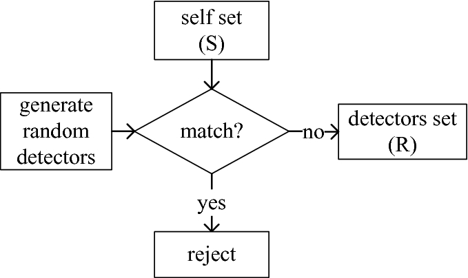

Our team has been trying to detect hackers’ network activity on smart devices. This is difficult because smart devices like Amazon Alexas or security cameras are usually powered by small microcontrollers. Thus, it’s impossible to run intensive software on them.
Even worse, we’ve been working with the Canadian Institute of Cybersecurity’s IoT 2023 dataset, which has over 14 GB of data! Clearly, we can’t store (yet alone train algorithms on) all this data on a small smart device. Thus, we have some tricky design requirements in creating ways to detect hackers:
Given this context, there are a few unsupervised learning AI algorithms that can meet our needs. This is where the negative selection and K-means algorithms come in.
This is the general approach that our group followed, with various side algorithms to help. Negative selection involves trying to detect patterns about what normal network requests look like. If a new network request comes in that’s too different from detected patterns, we know it’s abnormal (from a hacker).
This sounds good in theory, but the hard part is generating those ‘patterns.’ The naive approach that the negative selection algorithm tries is to simply generate random numbers until those random numbers resemble statistics about normal network requests in our dataset. This takes a long time. So we used a more efficient alternative: K-means selection.
K-means is a clustering algorithm which groups datapoints into clusters. In this case, we are clustering benign data (normal network requests) into K groups. The centre of each cluster (each ‘centroid’) will be a ‘pattern’ of normal network requests for the negative selection algorithm.
To start, we create centroids with random values. Based on this random assignment, each data point will be grouped into a cluster based on which centroid each data point is closest to. We measure ‘closeness’ (AKA affinity) with the Euclidean distance.
After this initial start, we loop two main steps.
Usually, the algorithm stops looping when the centroid values are no longer changing much. As seen above though, the centroid values are very volatile. This is because the data isn’t ‘normalized’.
‘Normalized’ data is data where all values have a mean of 0 and a standard deviation of one. This makes all values very similar, which helps with computing the averages and distances described in the k-means algorithm.
Our original dataset is far from normalized. For example, it includes a network request duration statistic, often in thousands of milliseconds. However, it also includes a 0/1 value to indicate if the network request used the TCP protocol. Clearly, the network request duration statistic will dominate any averages/distances calculated.
To convert the original data into normalized data, we use a formula from Statistics 101: Z-score normalisation.
Here, we see the updated results of the k-means clustering algorithm: